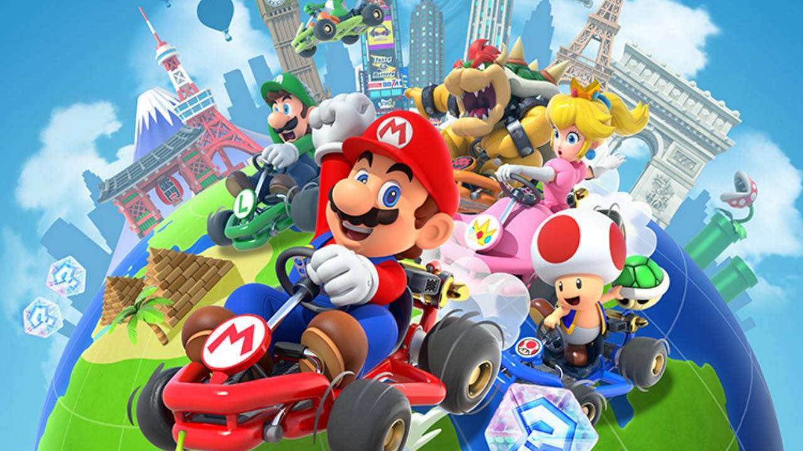
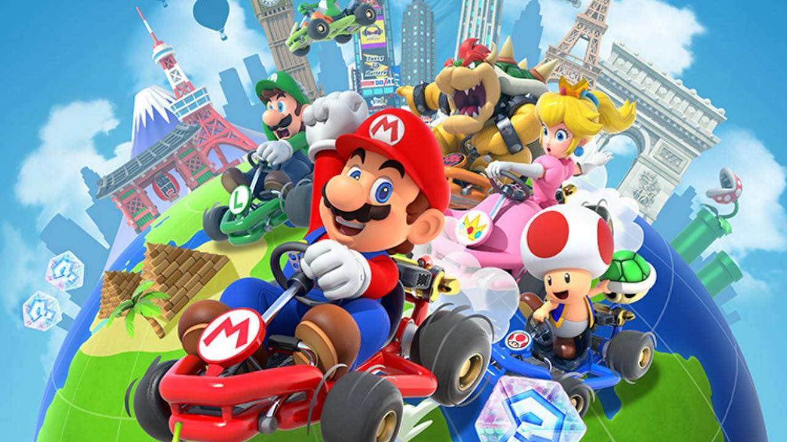

| GAME | REVIEW |
|---|---|
| 1. Minecraft |
Minecrafts player count has passed Fortnites, and it is simply the best game of all time. It's a wide variety of realms and an endless world of possibilities |
| 2. Wii sports |
Wii sports and wii sports resort where our childhood go to's. There is so much to do! you can sword fight pf fly planes, bowl, ball up, water ski, ect.. 10/10 would play again. |
| 3. Mario  |
Any type of mario game weather it's super sluggers or Mario Cart is a time |
| 4. Fortnite |
Fortnite was the most dominant game the past two years but it is dropping in popularity rapidly |